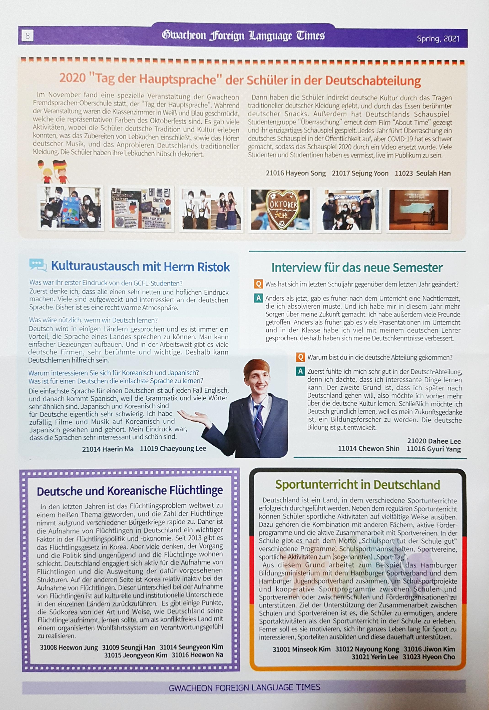
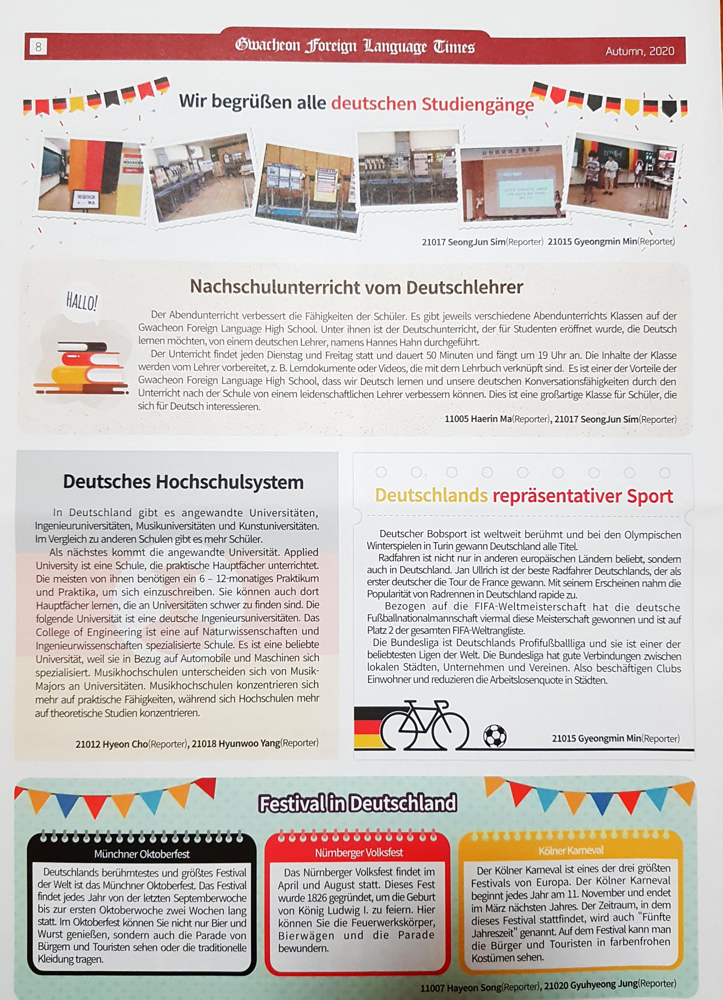
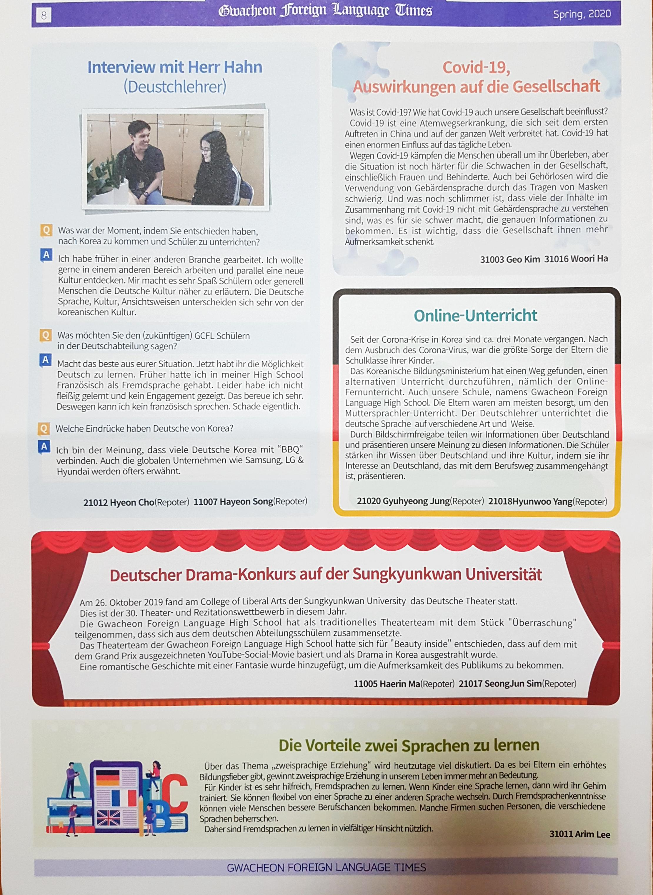

Gwacheon Foreign Language Times
Die Gwacheon Foreign Language High School gibt zweimal im Jahr eine fremdsprachige Zeitung heraus, die Artikel auf Englisch, Chinesisch, Japanisch, Französisch und Deutsch sammelt.
Es ist voll von interessanten Geschichten über die Kultur, Sprache, Kunst oder Schulveranstaltungen jedes Landes.
Auf dieser Seite können Sie auf Deutsch verfasste Artikel sehen.
Sie können Neuigkeiten von der Schule erhalten, wie zum Beispiel große Sprachtagsveranstaltungen und Interviews mit Muttersprachlern.
Gwacheon Foreign Language High School publishes a foreign language newspaper twice a year collecting articles in English, Chinese, Japanese, French and German.
It is full of interesting stories about the culture, language, art or school events of each country.
On this page you can see articles written in German.
You can get news from the school, such as major language day events and interviews with native speakers.
  